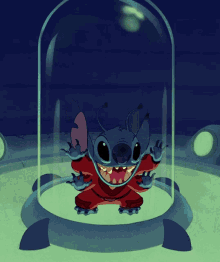

WELCOME TO THE MAGIC! KINGDON
Se você chgou até aqui, imagino que está procurando uma bela aventura não é mesmo marujo?!
Entaão venho aqui te dar algumas opções para se juntar a essa tripulação e entrar nessa embarcação

1º Piratas do Caribe - A Trilogia
Aqui temos um clássico onde engloba tudo que se possa imaginar...
Sinpse: O pirata Jack Sparrow tem seu navio saqueado e roubado pelo capitão Barbossa e sua tripulação. Com o navio de Sparrow, Barbossa invade a cidade de Port Royal, levando consigo Elizabeth Swann, filha do governador.
Para recuperar sua embarcação, Sparrow recebe a ajuda de Will Turner, um grande amigo de Elizabeth.
Eles desbravam os mares em direção à misteriosa Ilha da Morte, tentando impedir que os piratas-esqueleto derramem o sangue de Elizabeth para desfazer a maldição que os assola.
2º Alladin
Este aqui me recordo de pedir pro meu pai colocar o VHS (sim sou idoso) 300x até pegar no sono
Sinpse: Um jovem humilde descobre uma lâmpada mágica, com um gênio que pode lhe conceder desejos. Agora o rapaz quer conquistar a moça por quem se apaixonou, mas o que ele não sabe é que a jovem é uma princesa que está prestes a se noivar. Agora, com a ajuda do gênio, ele tenta se passar por um príncipe para conquistar o amor da moça e a confiança de seu pai.

3º Hércules
Perdi as contas de quantas vezes cantei junto com esse filme...
Sinpse: Hercules, filho dos deuses, foi capturado quando bebê por Hades e forçado a viver entre os mortais como metade homem e metade deus. Agora um adolescente, Hércules precisa realizar um rito de passagem na Terra para provar-se digno de viver com os deuses do Monte Olimpo. Com seu ajudante sátiro e corajoso Filoctetes, Hércules deve aprender a usar sua força para derrotar uma série de criaturas malignas.

4º Lilo & Stich
Pensa em um Alien MARAVILHOSO.. Ohana quer dizer....
Sinpse: Lilo é uma garota que adora cuidar de animais menos favorecidos. Lilo tem o costume de coletar lixo reciclável nas praias para, com o dinheiro recebido, comprar comida para peixes. Até que, em um belo dia, ela encontra um cachorro e decide adotá-lo. Entretanto, este cachorro na verdade é Stitch, um ser alienígena que é um dos criminosos mais perigosos da galáxia. Agora, Stitch esconde quatro de suas seis pernas e decide se fazer passar por um cachorro comum, ficando amigo de Lilo.
4º Bela e a Fera
Quer aquecer seu coraçãozinho... aqui é o lugar :)
Sinpse: Moradora de uma pequena aldeia francesa, Bela tem o pai capturado pela Fera e decide entregar sua vida ao estranho ser em troca da liberdade do progenitor. No castelo, ela conhece objetos mágicos e descobre que a Fera é na verdade um príncipe que precisa de amor para voltar à forma humana.